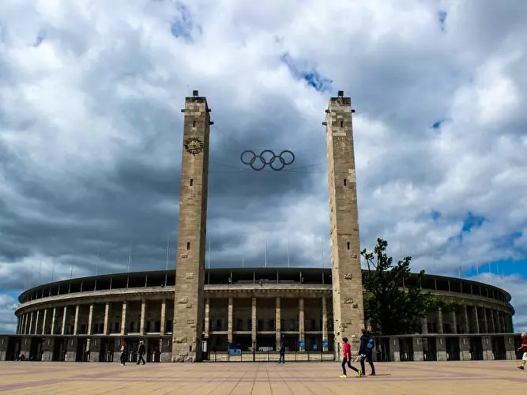

Amidst the powerhouse teams, Euro's allure extends to the grandeur of the stadiums hosting 32 teams in their quest for
victory. Join us as we venture into the heart of Germany to explore its celebrated and awe-inspiring stadiums, each a
testament to the rich history and passion for football in this captivating nation
Alianz Arena
The Allianz Arena stands as a beacon of architectural brilliance and sporting excellence in Munich, Germany. Home to the
revered FC Bayern Munich and TSV 1860 Munich football clubs, this iconic stadium boasts a striking exterior illuminated
by vibrant LED lights, which can change to reflect the colors of either team playing within. With a seating capacity of
over 75,000 spectators, the Allianz Arena has hosted numerous memorable matches, including UEFA Champions League finals
and World Cup fixtures. Beyond football, it serves as a venue for concerts and events, captivating visitors with its
modern amenities and electrifying atmosphere. As one of Europe's most renowned stadiums, the Allianz Arena continues to
enchant football fans worldwide with its storied history and architectural splendor.
Alianz Arena stadium of Bayern Munich
Olympic Stadium
The Olympic Stadium, situated in Berlin, Germany, stands as an enduring symbol of sporting history and architectural
grandeur. Constructed for the 1936 Summer Olympics, it has since hosted numerous iconic events, including the FIFA World
Cup and UEFA Champions League finals. With its distinctive blue track and towering stone columns, the stadium exudes a
sense of majesty and legacy. Home to the legendary Hertha BSC football club, it has witnessed countless moments of
triumph and glory. Beyond sports, the Olympic Stadium remains a cultural landmark, drawing visitors from around the
globe to marvel at its timeless design and rich heritage, making it a true testament to the enduring spirit of
athleticism and human achievement.

Olympic Stadium Berlin Germany
The Video Of Olympic Stadium during the Nazi Germany
The history of Olympic Stadium during the Nazi
Video Transcript
[Narrator]
In 1936, the Olympic Games were held in Berlin, Germany, under the Nazi regime led by Adolf Hitler.
The Olympic Stadium, known as the Reichssportfeld, was built specifically for the 1936 Summer Olympics. It was a massive complex that included not only the main stadium but also several other facilities for various sports.
The stadium's design was overseen by the architect Werner March, who followed the principles of Nazi architecture, with its imposing and monumental structures meant to convey a sense of power and strength.
On August 1, 1936, the opening ceremony of the Olympic Games took place at the Olympic Stadium. Hitler himself attended the ceremony and delivered a speech, using the event as a propaganda tool to showcase the supposed superiority of the Aryan race and the Nazi ideology.
Despite the political overtones, the 1936 Berlin Olympics saw numerous athletic achievements and records set by athletes from around the world, including the famous African-American athlete Jesse Owens, who won four gold medals, challenging the Nazi regime's racial ideology.
The Olympic Stadium remained an iconic venue in Berlin, even after the fall of the Nazi regime. It underwent renovations and continues to host major sporting events to this day, standing as a reminder of a complex and controversial chapter in history.
History
During Nazi Germany, the Olympic Stadium in Berlin was utilized as a propaganda tool, symbolizing the regime's power and
ideology. Constructed for the 1936 Summer Olympics, it showcased Hitler's vision of Aryan superiority to the world.
Despite its grandeur, the stadium's history is tainted by its association with Nazi propaganda and racial policies.
However, it also witnessed moments of defiance, such as Jesse Owens' victories, which challenged Hitler's beliefs.
Today, it serves as a somber reminder of the intertwining of sports and politics during that tumultuous era.
Signal Iduna Park Stadium
The Signal Iduna Park stadium, located in Dortmund, Germany, stands as a revered landmark in the world of football. Home
to Borussia Dortmund, one of Germany's most storied football clubs, this iconic stadium boasts an electric atmosphere
fueled by passionate fans known as the "Yellow Wall." With a seating capacity of over 81,000 spectators, Signal Iduna
Park regularly hosts thrilling Bundesliga matches and has been a venue for major international tournaments. Its
distinctive architecture and vibrant ambiance make it a must-visit destination for football enthusiasts worldwide,
embodying the spirit of camaraderie and excitement that defines the beautiful game.
Sinal Iduna Park Dortmund
Others Stadiums
In addition to the renowned Signal Iduna Park, Olympic Stadium, and Allianz Arena, Germany boasts a plethora of other
impressive stadiums across the country. One notable venue is the Mercedes-Benz Arena in Stuttgart, home to VfB
Stuttgart, which offers a modern and sleek design along with a vibrant atmosphere during matches. The Volkswagen Arena
in Wolfsburg, hosting VfL Wolfsburg, is another standout with its innovative architecture and state-of-the-art
facilities. Meanwhile, the Red Bull Arena in Leipzig, where RB Leipzig plays, captivates visitors with its dynamic
atmosphere and striking modern design. Each of these stadiums reflects Germany's passion for football and provides an
unforgettable experience for fans and players alike.

{kind=link}